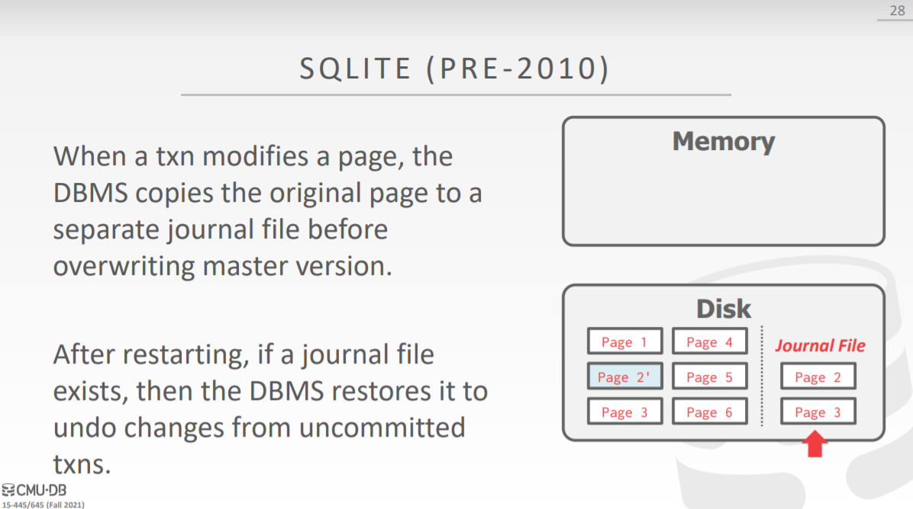

[CMU15445]:日志恢复系统
Crash Recovery
崩溃恢复是数据库中必不可少的组成部分，它用于将数据库恢复至故障发生之前的一致性状态，为了确保数据库的一致性，原子性以及持久性，就必须要使用恢复算法，恢复算法由两部分组成
- 在进行普通事务处理时，需要维护额外的数据，如日志，这样可以在后续崩溃时的恢复操作中使用到 ——>(接下来的内容)
- 在数据库发生崩溃时，为了维护数据库的一致性、原子性、持久性，所采取的动作
在崩溃恢复操作中需要使用到的两个关键步骤被称为redo(重做)和undo(撤销)
redo
将事务更新过的值都重新置为新值
undo
将事务更新过的值都置为旧值
Failure Classification
系统中可能会发生多种故障
事务故障
有两种错误可能造成事务执行失败
逻辑错误
如事务违反了完整性约束
系统错误
如系统进入了死锁
系统崩溃
软件错误
如内部发生的除0的操作，系统必须停止运行
硬件错误
如系统断电了，同样会引起系统的停止
上面的错误会到导致系统停止运行，进而导致内存中的数据丢失，在这里我们做出假设，认为这些错误不会导致磁盘上面的数据丢失，这也被称作
fail-stop假设
上面两种故障均可以进行恢复
磁盘故障
磁盘发生了故障，那么这种故障就是不可恢复的
Buffer Pool Management Policies
接下来将会介绍DBMS在进行事务处理时有关buffer pool的一些细节
抢占策略
如果一个未提交(活跃)状态的事务修改过的块可以被写入到磁盘，那么就称该策略为抢占(steal)策略,否则被称为非抢占策略
强制策略
如果事务在提交时会强制将所有修改过的块都输出到磁盘，那么该策略被称为强制(force)策略，否则被称为非强制策略
当使用强制策略时，进行崩溃恢复操作时比较简单，因为不需要考虑提交后数据丢失的情况，但是使用强制策略会导致频繁的块的输出操作，使得其在运行时的效率比较低，大多数系统采用的是非强制策略
No-Steal + Force
最简单的崩溃恢复方法就是采用: No-Steal + Force策略来实现，下面给出例子
上面是初始状态，经过两次write操作(A=3, B=8)之后变为了下面这样
下一步是T2的commit操作，但是
Force策略与No-Steal策略在此产生了矛盾，No-Steal策略要求不能将T1修改过的块写入到磁盘，而Force策略则要求必须将T2修改过的块在此时输出到磁盘，此时就会发生下面这种情况DBMS会拷贝一个新的tuple，其中只包含T2事务修改的数据，然后将其写回磁盘
- 优缺点分析
- 不需要使用
undo操作，因为未提交的数据根本就没有输出到磁盘 - 不需要使用
redo操作，因为所有提交的数据都被写入到了磁盘 - 限制1：如果一个事务所需要的数据不能够全部放入内存当中，那么该事务在这种策略下就不能够执行，因为该策略要求在事务提交之前不能够将脏page写回磁盘
- 限制2：如果事务更新了多个page(假设为4个), 由于操作系统无法为我们保证多个page写回磁盘这步操作的原子性，因此假设在将2个page写回磁盘过后系统崩溃，那么就会发生更新撕裂的问题
- 不需要使用
- 优缺点分析
Shadow Paging
影子分页计数采用页表拷贝的方式来保证数据库的崩溃可恢复性，这是一个No-Steal + Force策略的实现
在该技术当中，有两个页表:master page table, shadow page table，还有一个单独的DB Root page, 指向master page table整体布局如图所示
shadow page table是master page table的一分拷贝，当事务对page进行修改的时候，DBMS就会拷贝一份新的page, 并修改shadow page table上的指针，对这份拷贝page应用事务的修改，当事务的write操作结束并且执行commit之后，就会更改DB Root， 使之指向shadow page table, 即shadow page table代替了原来的master page table
综合分析
当发生崩溃时回滚十分简单
undo: 移除所有的shadwo page
redo: 不需要
缺点
拷贝整个
page table的代价比较昂贵commit代价过高
DB Root,shadow page table, 被更新的所有page，都需要被刷新回磁盘
Journal File
SQLite在2010年之前使用过一种被称作Journal File的方案，该方案中，当事务修改一个page的时候，首先将其拷贝到磁盘中一个被称作journal file的地区，如果事务执行过程中发生了崩溃，就会检查journal file中是否有page存在，如果有，就会使用这些page来进行undo操作

Write-Ahead Logging
先写日志(WAL)协议要求在主存中的数据块输出到数据库磁盘之前，与该数据块有关的所有日志记录必须首先输出到磁盘(稳定存储器)上, 通常是一个log file, 这是一个Steal + No-Force的例子
几乎所有的主流数据库系统都在使用这个协议，因为该协议具有最快的运行时速度，但是WAL恢复的时长要比Shadow Paging稍微慢一点
日志记录
一个日志记录具有一些字段
- Transaction Id (事务 id)
- Object Id (数据记录 id)
- Before Value (修改前的值)，用于 undo 操作
- After Value (修改后的值)，用于 redo 操作
故一条日志记录看起来像这样
<Ti, Xj, V1, V2>与此同时还有一些其他的日志记录：
- <Ti start>: 事务开始
- <Ti commit>: 事务提交
- <Ti abort>: 事务中止
例子
- 当事务执行时，每执行一条语句对数据项进行修改，就会在
WAL Buffer中保存指定的记录，然后再修改buffer pool中数据项的值 - 当事务执行到commit语句的时候，就会将
WAL Buffer中的内容写到磁盘的log file中,此时整个事务就算是提交了 - 尽管数据项还没有被刷新会磁盘，但是磁盘中已经有相应的日志了，即使发生了崩溃，也能够根据log file进行恢复
- 当事务执行时，每执行一条语句对数据项进行修改，就会在
group commit
在上面的方案中，每次有一个事务进行提交时就会将
WAL Buffer中的内容刷新回log file中，可以使用一种被称为group commit的优化策略，在该策略当中，WAL Buffer设置为两个，刷盘的时机变为：WAL Buffer满时刷盘当一个
WAL Buffer满了的时候，就会将其刷盘，与此同时，日志记录都保存在另一个WAL Buffer中超过指定时间
有时
WAL Buffer可能还没有满，但是所有的事务都在处于等待状态，此时如果超过了一定的时间段，WAL Buffer也会自动刷新
效率分析
大部分数据库更看重运行时效率，因此几乎所有 DBMS 使用 No-Force + Steal 的 buffer pool policy
Logging Scheme
在这里我们会介绍关于日志记录的不同形式，通常有两种日志记录的方案：physical logging, logical logging
physical logging
在该模式下的日志记录记录的是底层数据的修改
logical logging
该模式下记录的是SQL语句逻辑上的修改
下面是一个例子
注意到上面的例子中还有关于索引信息的日志，事实上，大多数数据库系统也会为索引的修改记录日志
优缺点
Logical Scheme所记录的字节数更少，但是一个问题就是假设使用一个update语句更新了大量tuple,那么在进行redo的时候就必须重新执行一遍该update语句，因为我们不知道update语句的实际更新究竟写入了多少数据到磁盘，而使用Physical Scheme就不会有这种情况
当今大多数数据库使用的是一种混合模式，被称为Physiological Scheme
可以看到，该模式下记录了一些底层的page_id, 但使用了slot_id这种逻辑单位而不是offset
Check Point
如果放任 WAL 增长，它可以随着新的操作执行而无限增长。如此这般，在故障恢复时，DBMS 需要读取更多的日志，执行更多的恢复和回滚操作。为了避免这种情况出现，DBMS 需要周期性地记录 checkpoint，即将所有日志记录和数据页都持久化到存储设备中，然后在日志中写入一条 <CHECKPOINT> 记录，举例如下：
当 DBMS 发生崩溃时，所有在最新的 checkpoint 之前提交的事务可以直接忽略，如 T1。T2 和 T3 在 checkpoint 前尚未 commit。其中，T2 需要 redo，因为它在 checkpoint 之后，crash 之前提交了，即已经告诉用户事务提交成功；T3 需要 undo，因为它在 crash 之前尚未 commit，即尚未告诉用户事务提交成功。
实现 checkpoints 有需要要考虑的问题：
- 在于要保证 checkpoint 的正确性，我们需要暂停所有事务
- 故障恢复时，扫描数据找到未提交的事务可能需要较长的时间
- 如何决定 DBMS 执行 checkpoint 的周期，太频繁将导致运行时性能下降；等太久将使得 checkpoint 的内容更多，更耗时，同时数据恢复也要消耗更长的时间
Conclusion
WAL几乎总是最佳选择
本博客所有文章除特别声明外，均采用 CC BY-SA 4.0 协议 ，转载请注明出处！